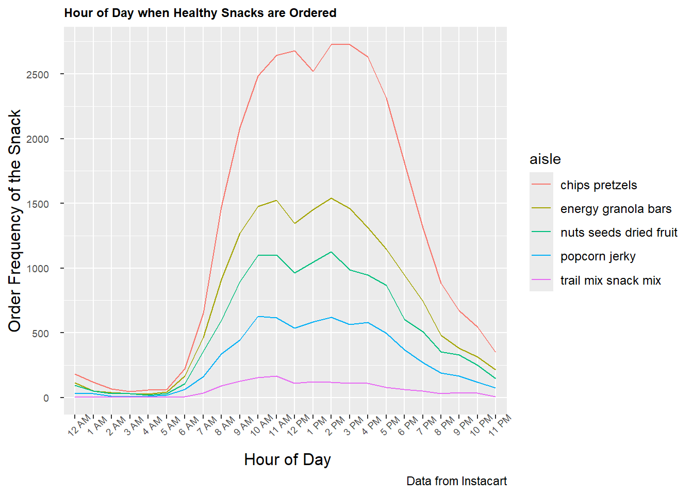
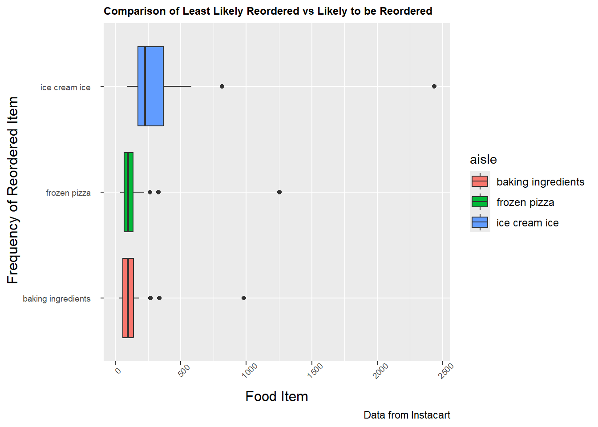

library(tidyverse)
library(plotly)
library(viridis)
library(viridisLite)
library(p8105.datasets)data("instacart", package = "p8105.datasets")
View(instacart)The bar chart below shows the number of items ordered from each aisle more than 10000 times.
food_order_10000 <- instacart |>
count(aisle, name = "n") |>
filter(n > 10000)|>
mutate(
aisle = reorder(aisle,n)
)
food_order_10000 |>
plot_ly(
x = ~aisle, y = ~n, type = "bar", color = ~aisle) |>
layout(
title = "Most commonly ordered food items, ascending order(n > 10000)",
xaxis = list(title = "Frequency of food items ordered"),
yaxis = list(title = "Aisle name")
)## Warning in RColorBrewer::brewer.pal(max(N, 3L), "Set2"): n too large, allowed maximum for palette Set2 is 8
## Returning the palette you asked for with that many colors
## Warning in RColorBrewer::brewer.pal(max(N, 3L), "Set2"): n too large, allowed maximum for palette Set2 is 8
## Returning the palette you asked for with that many colorsNow we will investigate what hour of the day healthy snacks such as energy granola bars, popcorn jerky, chips pretzels, trail mix snack mix, and nuts seeds dried fruit are ordered. The hypothesis is that customers order it early in the day, let’s see if the data reflects that.
healthy_snacks <- instacart
snack_name <- c("energy granola bars", "popcorn jerky", "chips pretzels", "trail mix snack mix", "nuts seeds dried fruit")
healthy_snacks <- instacart |>
filter(aisle %in% snack_name) |>
mutate(
hour_24 = order_hour_of_day,
order_hour_of_day = as.character(order_hour_of_day),
order_hour_of_day = str_replace(order_hour_of_day, "^0$", "12 AM"),
order_hour_of_day = str_replace(order_hour_of_day, "^1$", "1 AM"),
order_hour_of_day = str_replace(order_hour_of_day, "^2$", "2 AM"),
order_hour_of_day = str_replace(order_hour_of_day, "^3$", "3 AM"),
order_hour_of_day = str_replace(order_hour_of_day, "^4$", "4 AM"),
order_hour_of_day = str_replace(order_hour_of_day, "^5$", "5 AM"),
order_hour_of_day = str_replace(order_hour_of_day, "^6$", "6 AM"),
order_hour_of_day = str_replace(order_hour_of_day, "^7$", "7 AM"),
order_hour_of_day = str_replace(order_hour_of_day, "^8$", "8 AM"),
order_hour_of_day = str_replace(order_hour_of_day, "^9$", "9 AM"),
order_hour_of_day = str_replace(order_hour_of_day, "^10$", "10 AM"),
order_hour_of_day = str_replace(order_hour_of_day, "^11$", "11 AM"),
order_hour_of_day = str_replace(order_hour_of_day, "^12$", "12 PM"),
order_hour_of_day = str_replace(order_hour_of_day, "^13$", "1 PM"),
order_hour_of_day = str_replace(order_hour_of_day, "^14$", "2 PM"),
order_hour_of_day = str_replace(order_hour_of_day, "^15$", "3 PM"),
order_hour_of_day = str_replace(order_hour_of_day, "^16$", "4 PM"),
order_hour_of_day = str_replace(order_hour_of_day, "^17$", "5 PM"),
order_hour_of_day = str_replace(order_hour_of_day, "^18$", "6 PM"),
order_hour_of_day = str_replace(order_hour_of_day, "^19$", "7 PM"),
order_hour_of_day = str_replace(order_hour_of_day, "^20$", "8 PM"),
order_hour_of_day = str_replace(order_hour_of_day, "^21$", "9 PM"),
order_hour_of_day = str_replace(order_hour_of_day, "^22$", "10 PM"),
order_hour_of_day = str_replace(order_hour_of_day, "^23$", "11 PM"),
order_hour_of_day = fct_relevel(order_hour_of_day,
"12 AM","1 AM", "2 AM", "3 AM", "4 AM", "5 AM", "6 AM", "7 AM", "8 AM", "9 AM", "10 AM", "11 AM", "12 PM", "1 PM", "2 PM", "3 PM", "4 PM", "5 PM", "6 PM", "7 PM", "8 PM", "9 PM", "10 PM", "11 PM")) |>
count(aisle, order_hour_of_day, hour_24, name = "n")
healthy_snacks |>
ggplot(aes(x = order_hour_of_day, y = n, group = aisle, color = aisle )) +
geom_line() +
scale_y_continuous(
breaks = seq(0,3000, by = 500)
) +
labs(
title = "Hour of Day when Healthy Snacks are Ordered ",
x = " Hour of Day",
y = "Order Frequency of the Snack",
caption = "Data from Instacart") +
theme(axis.text.y = element_text(margin = margin(r = 8))) +
theme(axis.text.x=element_text(angle=45)) +
theme(
axis.title = element_text(size = 12),
axis.text = element_text(size = 7),
legend.text = element_text(size = 9),
plot.title = element_text(size = 9, face = "bold"))
ggplotly()Now let’s compare a food item that’s considered least likely to be reordered. According to the hypothesis from the Instacart website, baking ingredients are least likely to be reordered. To test the hypothesis we will compare it to ice cream and frozen pizza. Let’s see if our data reflects this hypothesis!
food_items <- c("ice cream ice", "frozen pizza", "baking ingredients")
reordered_less <- instacart |>
filter(reordered%in%1) |>
filter(aisle%in%food_items) |>
mutate(
days_since_prior_order = as.character(days_since_prior_order)) |>
count(aisle, reordered, days_since_prior_order, name = "n")
reordered_less |>
ggplot(aes(x = aisle, y = n, group = aisle, fill = aisle)) +
geom_boxplot() +
coord_flip() +
labs(
title = "Comparison of Least Likely Reordered vs Likely to be Reordered ",
x = " Frequency of Reordered Item",
y = "Food Item",
caption = "Data from Instacart") +
theme(axis.text.y = element_text(margin = margin(r = 8))) +
theme(axis.text.x=element_text(angle=45)) +
theme(
axis.title = element_text(size = 12),
axis.text = element_text(size = 7),
legend.text = element_text(size = 9),
plot.title = element_text(size = 9, face = "bold"))
ggplotly()